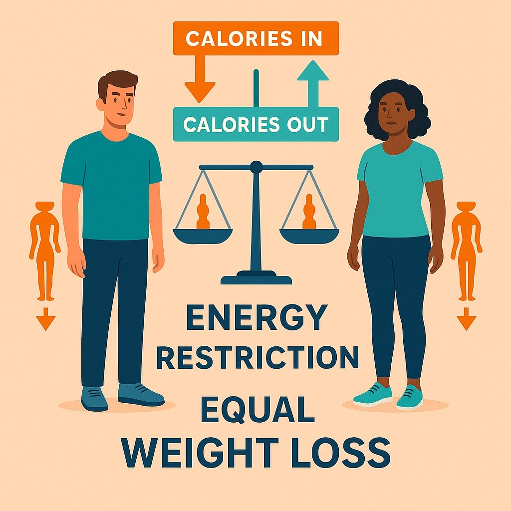

The purpose of our group:
(from the public description)
“Discuss the latest scientific research on preventing, managing, and potentially reversing cardiovascular disease through evidence-based interventions.”
The purpose of our group:
(from the public description)
“Discuss the latest scientific research on preventing, managing, and potentially reversing cardiovascular disease through evidence-based interventions.”

Stuart Phillips debunks claims that women need special weight loss strategies. A meta-analysis of 13 long-term RCTs found no sex difference, low-carb reviews similar, and GLP-1 trials showed women losing about 1 kg more.
The post summarises a video describing an NEJM study of 16,000 asymptomatic people showing plaque accumulates first in the neck and leg arteries, during the 20s to 40s, before the heart. Heart scans such as coronary calcium may therefore miss early disease; carotid intima-media thickness ultrasound can detect peripheral plaque, and the ankle-brachial index offers a simple at-home check for leg artery blockage.

The admin announces a March 2026 Frontiers in Hematology paper with Dr Hasselbalch after five years of research. It analyses how cardiovascular drugs, supplements and lifestyle can be used in polycythemia vera and related blood disorders, and the links between cardiovascular disease, chronic inflammation and blood stem cell mutations.
Describes the 20-year follow-up of the West of Scotland Coronary Prevention Study: 5 years of pravastatin in middle-aged men with high cholesterol and no prior CHD produced a lasting legacy effect, with reduced all-cause, CV and coronary mortality and fewer heart failure and MI hospitalizations. No excess cancer or non-CV mortality was seen.
Reminder to get vaccinated, linking an earlier admin post. The shared summary lists the flu vaccine with 11-42% lower all-cause mortality in RCTs and prospective cohorts, 43% lower in consistent associations across 40+ studies, and 25-40% lower Alzheimer's risk, citing a cohort study and a systematic review and meta-analysis. Also notes Novavax (non-mRNA) COVID vaccine is no longer available to him.
Admin explains that beyond LDL, BP, BMI and triglycerides, chronic inflammation driven by viral infections, oral bacteria, gut metabolites (TMAO, imidazole propionate) and microplastics contributes to atherosclerosis. He lists personal habits (fiber, flossing, dental cleanings, flu vaccine, air purifier, organic food) and links his earlier posts.